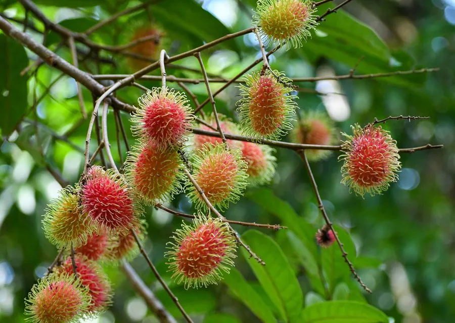

乔木 · 植物界
红毛丹 Nephelium lappaceum

原产马来群岛的热带水果，果实表面密生红色肉质刺毛，果肉晶莹酸甜，是东南亚著名的水果之一。
- 分类
- 门被子植物门纲木兰纲目无患子目科无患子科属韶子属
- 栖息环境
- 海拔 600 米以下的热带地区，喜高温多湿
- 地理分布
- 原产马来群岛，泰国、马来西亚等国栽培；中国海南、广东等地引种
- 保护级别
- 暂无评估；中国未列入国家重点保护野生植物名录
物种志
红毛丹为常绿乔木，高可达 20 m，树皮灰褐色；偶数羽状复叶，小叶 2–4 对，椭圆形至倒卵形，全缘。花期 3–4 月，圆锥花序顶生，花小、黄绿色，雌雄同株；果实为核果，球形或卵圆形，果皮密生红色或黄绿色肉质刺毛，果肉白色半透明、酸甜多汁，内含 1 粒种子。
红毛丹原产马来群岛，泰国、马来西亚、印度尼西亚等国栽培最盛，中国海南、广东、云南等地有引种。喜高温多湿、光照充足，适宜深厚肥沃、排水良好的酸性土壤，不耐寒。果肉晶莹酸甜，是东南亚著名的热带水果，可鲜食或制罐头、果汁；果皮与种子可入药。红毛丹与荔枝、龙眼同属无患子科，但果实表面密生刺毛，是最容易辨认的特征。
形态与习性
- 株高可达 20 m，树皮灰褐色
- 花期3–4 月，花小、黄绿色
- 果期7–9 月，果皮密生刺毛
- 光照喜光，不耐长期荫蔽
- 水分喜湿润，怕积水
- 主要用途鲜食水果、罐头果汁、果皮与种子入药
趣味知识
- 红毛丹的果实表面密生红色肉质刺毛，因此得名“红毛丹”。
- 红毛丹与荔枝、龙眼同属无患子科，被称为“毛荔枝”。
- 红毛丹的果肉白色半透明、酸甜多汁，是东南亚著名水果。